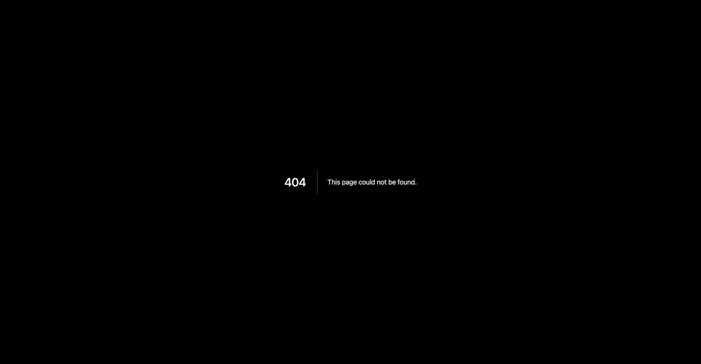
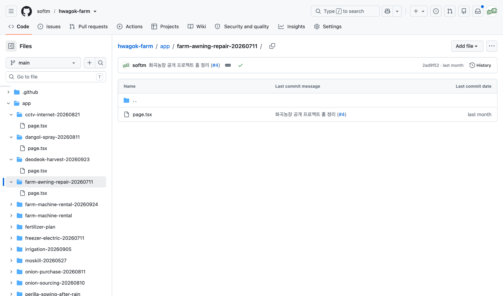
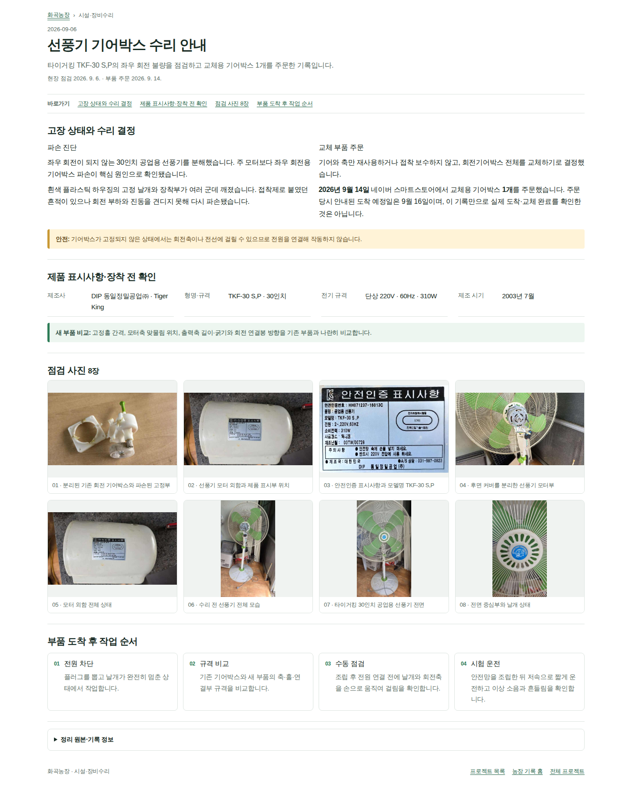
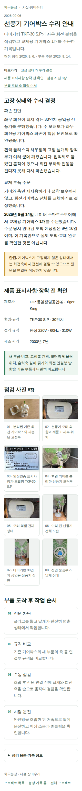
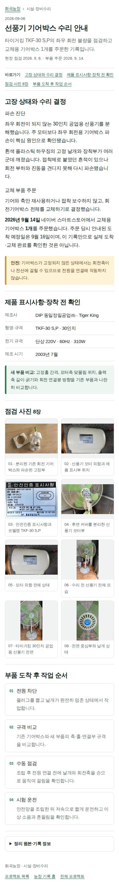
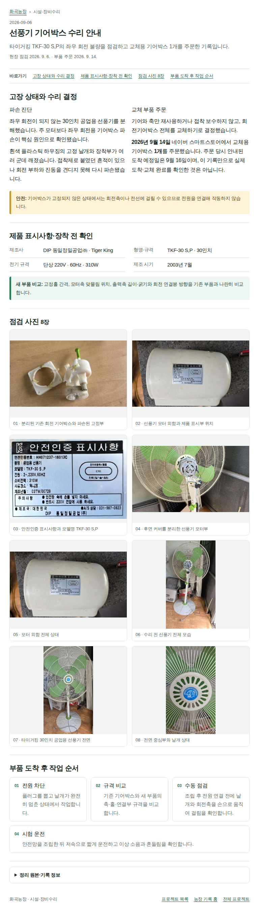
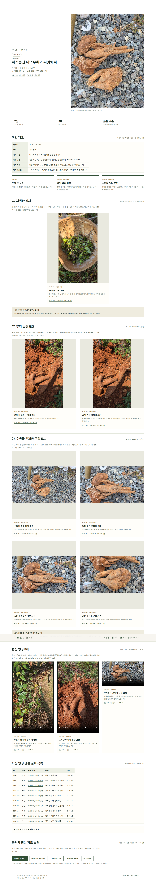
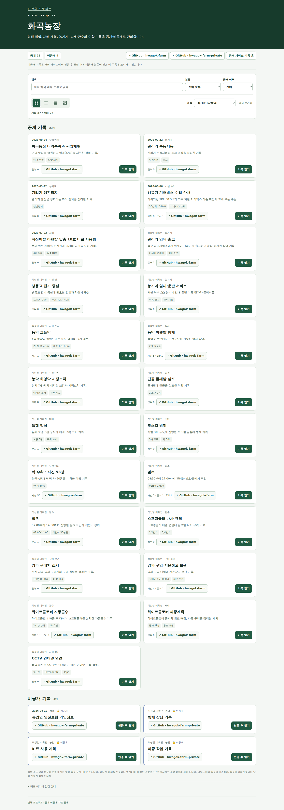

농작업 원본 보존 기록
화곡농장 더덕수확과 씨앗채취 — 대화·배포 수정 경과
원래 작업일 2026-09-23 · 이번 파일 정리 2026-10-05
수확·씨앗채취 본문으로 돌아가기 · 본문 Markdown
이 부록은 농작업 사실과 이후 웹 배포 작업을 분리해 보관한 것입니다. 보존된 검증 결과는 2026-09-30 시점의 자료이며, 현재 운영 상태를 새로 검사한 결과가 아닙니다. 과거 미완료 보고와 후속 성공 결과를 시간 흐름에 따라 구분합니다.
1. 대화에서 제기된 문제와 처리 기록
| 흐름 | 요청·문제 | 보존 자료에서 확인되는 내용 |
|---|---|---|
| 최초 기록 | “20260923 화곡농장 더덕수확 &더덕씨”와 사진·영상 제공 | 현장 사진 7장·영상 3개 확보 |
| MD·HTML·ZIP 정리 | 사진·미디어가 포함된 정리와 공개 배포 요청 | 초기 묶음과 후속 수정 묶음 모두 보존 |
| 공개 링크 문제 | 비밀번호 질문 및 404 화면 제출 | 사용자 첨부 화면 image(7).png 보존 |
| 저장소 구조 문제 | 채팅별 app/.../page.tsx가 기준에 맞는지 지적 |
사용자 첨부 화면 image(8).png 보존 |
| 텍스트 중심 이관 문제 | 사진·영상 누락, 내용 축약, 업로드 가능 여부에 대한 상충 설명 | 파일명만 적은 상태와 실제 미디어 포함을 구분해야 한다는 요구 |
| 원본 대조 재정리 | 뿌리 사진을 삭과 사진으로 설명한 오류 정정 | 후속 record.md, record.json 및 현장 원본 대조 |
| 미디어 기본 포함 | 별도 요청이 없어도 사진·영상·음성·관련 원본을 포함 | 이번 ZIP에 현장·대화·검증 이미지 및 관련 원본 보존 |
| 비공개 링크 전수 조사 | 아버지 병원 치료 등 Vercel 링크 문제 | 아래 별도 절에 대화상 조사 결과와 미완료 상태 구분 |
| 목록·상세 제목 불일치 | 더덕 기록을 예로 전체 조사·적용 요청 | 13개 프로젝트·75개 항목 조사 자료 및 공개 제목 검증 결과 보존 |
| 채팅별 GitHub 링크 | “해당 디렉토리로 연결해야지 전체프로젝트 반영해” | 각 채팅 링크는 그 채팅 자료 디렉터리로 연결하라는 요구. 이 요구의 전체 적용 완료를 확인할 결과는 현재 자료에 없음. |
2. 더덕 사진·영상 및 제목 검증 기록
| 점검 항목 | 보존된 결과 | 근거 |
|---|---|---|
| 초기에 작성된 로컬 대조 JSON | 원본 10개 해시는 일치하지만, 당시 공개 업로드·재생은 미완료로 기록 | 초기 대조 JSON |
| 후속 운영 파일 대조 | 사진 원본 7장·영상 원본 3개 및 문서·재생용 파일의 운영 바이트 일치 | 운영 검증 JSON |
| 후속 브라우저 검증 | 사진 7장 디코딩, 영상 3개 재생 시각 증가, success: true |
최종 브라우저 JSON |
| 화곡농장 공개 목록·상세 | 목록 23건의 날짜·이름을 합한 제목과 상세 제목 일치 | 같은 최종 브라우저 JSON |
| 더덕 문서 경로 | 기존 상세 경로, /archive/.../, record.html 제목 대조 |
운영 검증 JSON의 liveTitles |
| 초기에 실패한 화면 검증 | 선풍기 이름만 표시된 목록과 날짜를 붙인 상세의 비교에서 실패 | 초기 검증 JSON |
초기 실패 보고서와 최종 성공 보고서는 서로 다른 실행입니다. 원본 파일의 단순 존재, 소스 수정, 실제 배포, 브라우저 표시·재생은 각각 별도의 단계로 기록합니다.
작업일과 작성일 표시
| 구분 | 이 채팅에 남은 값 |
|---|---|
| 사용자 원래 작업명 | 20260923 화곡농장 더덕수확 &더덕씨 |
| 실제 농작업일 | 2026-09-23 |
| 기존 중앙 목록의 작성일 | 2026-09-24 — 보존된 메타데이터 값 |
| 당시 통일된 상세 제목 | 2026-09-24 화곡농장 더덕수확과 씨앗채취 |
| 이번 보관 문서의 제목 | 화곡농장 더덕수확과 씨앗채취; 작업일은 별도 표시 |
대화에서 사용된 관련 링크
| 목적 | 링크 |
|---|---|
| 전체 프로젝트 | Projects |
| 화곡농장 목록 | 화곡농장 프로젝트 목록 |
| 기존 더덕 상세 | 더덕 수확·씨앗채취 |
| 미디어 포함 아카이브 | 더덕 전체 HTML |
| 채팅 자료 디렉터리 | 더덕 아카이브 디렉터리 |
| 전체 공개 제목 검증 실행 | 보존 보고서의 실행 기록 |
| 더덕 브라우저·미디어 검증 실행 | 보존 보고서의 실행 기록 |
위 링크는 대화·기존 보고서에 기록된 주소입니다. 이번 정리에서 새로 접속해 현재 동작을 확인한 것으로 표시하지 않습니다.
3. 전체 제목 조사 자료의 범위
최종 전수 조사 JSON의 원래 집계는 13개 프로젝트·75개 목록 항목입니다. 공개 상세 제목 matched는 26건, private-authenticated-page-not-fetched는 46건, 외부 서비스·프로젝트 홈 분류는 3건입니다. 46건은 비공개 제목 일치 확인 건수가 아닙니다.
| 프로젝트 | 목록 항목 | 공개 상세 제목 일치 | 비공개 접근·열람 미검증 분류 | 외부 서비스·홈 분류 |
|---|---|---|---|---|
| 화곡농장 | 27 | 23 | 4 | 0 |
| 광명 | 2 | 2 | 0 | 0 |
| 나 | 6 | 0 | 6 | 0 |
| 온수힐 | 7 | 0 | 7 | 0 |
| 연서 교육 | 2 | 0 | 2 | 0 |
| 웅도 토지·성토 | 10 | 0 | 9 | 1 |
| 화곡리 개간허가 | 5 | 0 | 5 | 0 |
| 아버지 병원 치료 | 7 | 0 | 7 | 0 |
| 돌봄한눈·전국 요양기관 | 2 | 0 | 0 | 2 |
| 메디찾기 · 병원·약국·비급여 | 1 | 0 | 1 | 0 |
| 경주김씨 | 0 | 0 | 0 | 0 |
| 서해박속낙지 | 6 | 1 | 5 | 0 |
| 용인·경주·이천 가족여행 | 0 | 0 | 0 | 0 |
별도 Private GitHub 소스 점검 보고서는 화곡농장 4건, 나 6건, 온수힐 문서 6건, 웅도 상세 8건, 아버지 병원 치료 7건, 서해박속낙지 5건의 제목 매핑·소스 처리를 기록합니다. 합계 36건이며, 인증 후 운영 화면 검증과는 구분합니다. 화곡리 개간허가 5건은 마지막 대화 결과에서 미완료로 남았습니다.
| 제목 수정 중 보존 기준 | 기록 |
|---|---|
| 기본 제목 | 중앙 목록의 이름·작성일 메타데이터 사용 |
| 사용자 제목 | 임의 축약·재해석 대신 기록명 보존 |
| 날짜 | 작성일과 작업일 구분; 확인되지 않은 날짜를 추정해 채우지 않음 |
| 원본 | 본문·사진·영상·음성·ZIP을 제목 수정 때문에 삭제·대체하지 않음 |
| 복합 문서 | 문서 제목과 본문 절 제목을 구분; H1 전체를 같은 제목으로 바꾸지 않음 |
| 결과 보고 | 검사 성공, 실제 수정, 운영 반영, 비공개 인증 후 검증을 구분 |
4. 비공개 연결 조사 경과와 남은 요청
아래는 대화에 기록된 당시 조사·조치 보고입니다. 이 ZIP의 독립적인 현재 운영 검사가 아닙니다.
| 대상 | 당시 확인·보고된 내용 | 완료로 볼 수 없는 범위 |
|---|---|---|
| 아버지 병원 치료 | 7개 Vercel /archive/... 주소가 404; GitHub에는 기록 원본 존재. 인증 후 내부 경로 복귀 소스 수정 |
당시 새 Vercel 운영 반영·로그인 후 원문 검증 미완료 |
| 화곡리 개간허가 | 다른 저장소 hwagok-farm-private를 가리킨 최근 배포 및 ERROR가 보고됨 |
올바른 저장소 연결·운영 재배포 미완료 |
| 화곡농장 비공개·온수힐 | 조회된 기존 배포와 현재 소스 반영 여부 미확인으로 분류 | 인증 후 개별 문서·미디어 전수 확인 미완료 |
| 나·서해박속낙지·웅도 | 배포 저장소명·READY 대조가 보고됨 | READY만으로 원문·미디어 표시·재생 성공을 뜻하지 않음 |
| GitHub 채팅 링크 | 프로젝트 루트 대신 해당 채팅의 자료 디렉터리로 연결하도록 전체 프로젝트에 적용 요청 | 후속 전체 디렉터리 링크 적용·접속 검증 완료 근거 없음 |
비공개 자료가 인증된 Vercel 주소로 연결되는 것 자체를 오류로 보지 않습니다. 없는 경로, 다른 프로젝트 연결, 인증 후 대상 문서로 돌아가지 않는 문제를 구분해야 한다는 내용으로 기록되었습니다. 이번 파일 정리에서는 공개·비공개 연결이나 비밀번호를 변경하지 않았습니다.
5. 대화 첨부 화면과 검증 캡처 전체
현장 사진과 혼동하지 않도록 사용자 첨부 화면 2장, 초기 검증 캡처 4장, 최종 검증 캡처 6장을 구분했습니다. 초기·최종에 같은 그림이 있어도 파일과 출처를 각각 보존했습니다. 선풍기 화면은 더덕 사진이 아니라 전체 UI 검증 과정에서 수집한 보조자료입니다.
화면 01 · 사용자가 첨부한 404 오류 화면
구분: 사용자 첨부 화면

.png){kind=link}
원본 이미지 · 2048 × 1065px
화면 02 · 사용자가 첨부한 GitHub 개별 페이지 디렉터리 화면
구분: 사용자 첨부 화면

.png){kind=link}
원본 이미지 · 2048 × 1207px
화면 03 · 선풍기 상세 검증 화면 · 1440px
구분: 초기 검증 캡처 · 최종 성공 판정과 구분


원본 이미지 · 1440 × 1787px
화면 04 · 선풍기 상세 검증 화면 · 320px
구분: 초기 검증 캡처 · 최종 성공 판정과 구분


원본 이미지 · 320 × 3052px
화면 05 · 선풍기 상세 검증 화면 · 390px
구분: 초기 검증 캡처 · 최종 성공 판정과 구분


원본 이미지 · 390 × 2880px
화면 06 · 선풍기 상세 검증 화면 · 768px
구분: 초기 검증 캡처 · 최종 성공 판정과 구분


원본 이미지 · 768 × 2694px
화면 07 · 더덕 상세 제목·사진·영상 최종 검증 캡처
구분: 기존 최종 검증 캡처


원본 이미지 · 1440 × 8090px
화면 08 · 선풍기 상세 반응형 최종 캡처 · 1440px
구분: 기존 최종 검증 캡처

원본 이미지 · 1440 × 1787px
화면 09 · 선풍기 상세 반응형 최종 캡처 · 320px
구분: 기존 최종 검증 캡처

원본 이미지 · 320 × 3052px
화면 10 · 선풍기 상세 반응형 최종 캡처 · 390px
구분: 기존 최종 검증 캡처

원본 이미지 · 390 × 2880px
화면 11 · 선풍기 상세 반응형 최종 캡처 · 768px
구분: 기존 최종 검증 캡처

원본 이미지 · 768 × 2694px
화면 12 · 화곡농장 목록 제목 최종 검증 캡처
구분: 기존 최종 검증 캡처


원본 이미지 · 1440 × 4100px
6. 기존 정리본·검증 ZIP 원본 보존
아래 19개 ZIP은 확보된 파일 바이트를 그대로 보존했습니다. 내부 이미지 10장은 위 캡처 절에서도 직접 볼 수 있게 꺼내 두었고, JSON·기준 문서 등은 evidence/reports/에도 보존했습니다. 기존 정리본의 오류 문구를 삭제하거나 현재 사실로 덮어쓰지 않았습니다.
7. 다른 첨부와 해석 제한
냉동고 실외기 분석.txt도 현재 첨부 집합에 있으므로 기타 첨부로 원문 그대로 보존했습니다. 이 파일은 더덕 수확 기록의 근거가 아니며, 냉동고 설정 안내의 정확성을 이번 정리에서 검증하거나 재권고하지 않았습니다.
이 정리본은 현재 대화에서 확인 가능한 발언, 실제 첨부 및 검증 자료를 대상으로 합니다. 생략된 과거 대화의 전문, 제출되지 않은 사진·영상, 다른 채팅의 원본 전체를 확보한 것으로 주장하지 않습니다.
| 검증·추적 파일 | 내용 |
|---|---|
| source-inventory.json | 이번에 확보된 원본 파일 → 패키지 경로, 바이트 크기·해시 |
| media-manifest.json | 사진·영상·화면 캡처의 분류·파일명·크기·해시 |
| checksums.sha256 | 완성 패키지 내부 파일 해시 |
| validation.json | 이번 로컬 문서 링크·사진·영상 및 패키지 검증 결과 |
확인 단위: ZIP에 보존됐다는 사실은 공개 배포됐다는 뜻이 아니고, 과거 운영 성공 보고는 현재 운영 상태를 재확인한 결과가 아닙니다.